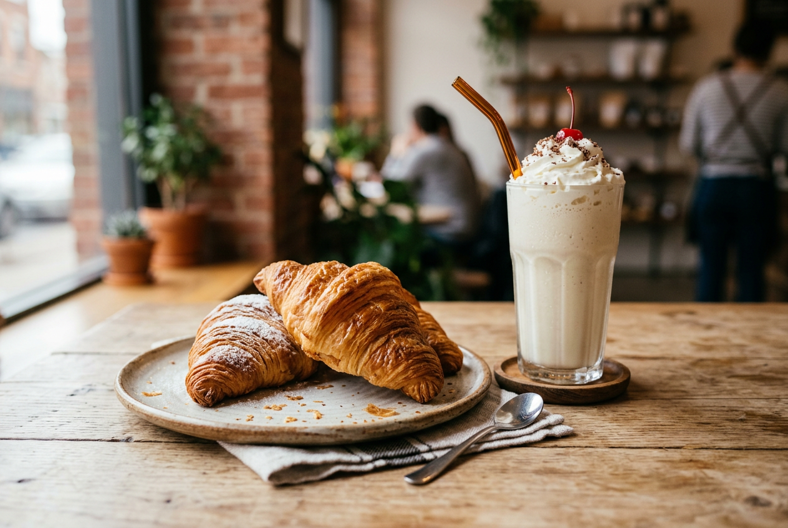

About LPS
LPS was founded in . Our shop was built from the love of pasteries. We hope our shop adds a unique and interesting place to our little town.

LPS was founded in . Our shop was built from the love of pasteries. We hope our shop adds a unique and interesting place to our little town.
| Pasteries | Qty | Price |
|---|---|---|
| Crunchy | 1 | $1.50 |
| 2 | $2.50 | |
| 3 | $3.25 | |
| Soft | 1 | $2.00 |
| 2 | $3.50 | |
| 3 | $4.50 | |
| Macaroons & Yoghurt $2 | ||